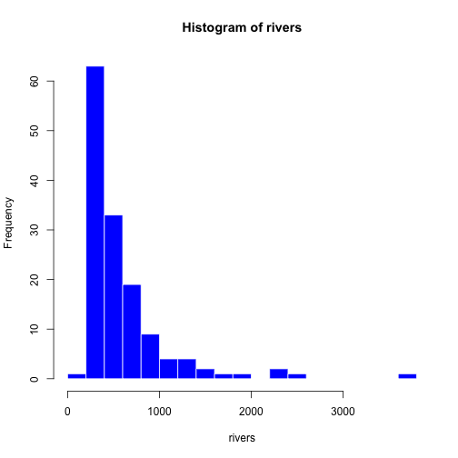

Introducing Data Science with R
week.3
謝舒凱 Lab of Ontologies, Language Processing and e-Humanities
GIL, National Taiwan University
大綱
- Basic R and RStudio (50min)
- A glace at a data science example (50min)
- Lab session (50min)
大綱
Basic R and RStudio- A glace at a data science example
- Lab session
R
- 語言 language、編譯 compiler、程式環境 IDE
- The R programming language is (originally) used for statistical computing and graphics.
R 的學習
自學教材課程
RStudio 安裝
- RStudio is an open source Integrated Development Environment (IDE) for the R platform.
RStudio Desktop 0.99.903還是Preview v 1.0.27(推薦)
RStudio 設定與熟悉
- 版型調整: (Workspace)、(Console)、(Environment and History)、(Files, Plots, Packages, Help, Viewer)
- 目錄結構 (dsr: data, scripts, homework, etc)
RStudio 設定與熟悉
用 RStudio 還可以做很多事 (to be continued...)
- 做 (可重製 reproducible、可調參數 Parameterized、互動型 interactive) 筆記(notebook) 與報告 (report)
- 做投影片 (presentation)
- 做網站 (website) 與 web application (using
shiny) - 做「數位報表」(dashboard)
- 做專業科學文件 (using \(\LaTeX\))
R 的初體驗
data() # browse pre-loaded data sets
data(rivers) # get this one: "Lengths of Major North American Rivers"
?rivers
head(rivers) # peek at the data set
## [1] 735 320 325 392 524 450
length(rivers) # how many rivers were measured?
## [1] 141
summary(rivers) # what are some summary statistics?
## Min. 1st Qu. Median Mean 3rd Qu. Max.
## 135.0 310.0 425.0 591.2 680.0 3710.0
R 的初體驗
# make a histogram
hist(rivers, col="blue", border="white", breaks=25) # play around with these parameters

In-class Exercise
- 換看看顏色 (用
colors()看 R 認識什麼顏色)
hist(log(rivers), col="sienna", border="white", breaks=25)

入門小秘訣
ctrl + l清除 console 的顯示內容。rm(list=ls())清除 workspace 中的變數。- 但請注意：R 也可以在終端機執行：對於日後在雲端伺服器工作者，特別是結合指令列 (command line) 很重要。
- 隨時知道妳在那裡：
getwd()andSet Working Directory
變數 (variable)、賦值 (assignment)
- R 在給予變數值時是利用
<-而不是其他程式語言中常見的=。（根據 R 官方文件解釋因為在某些狀況是會出問題）。 - 變數命名中，大小寫有所區別。所以 a 與 A 是不同的變數。
a <- 19
a
## [1] 19
資料類型 (Data type) 與基本運算 (basic arithmetic)
資料類型包含以下幾種，可用 mode 函數判斷
- 數值型 (numeric)：實數（可以寫成整數 integers，小數 floating numners，或 科學記述 scientific notations）
b <- 8.31
mode(b)
## [1] "numeric"
- 字符型 (character)：文字字串，放入 "" 或 '' 中
c <- 'coding'
mode(c)
## [1] "character"
資料類型 (Data type) 與基本運算 (basic arithmetic)
- 邏輯型 (logical)：
TRUE(T) 和FALSE(F) 兩個值
d <- F
mode(d)
## [1] "logical"
- 複數型 (complex) :取值包含虛數 \(a+bi\)
e <- 2+3i
mode(e)
## [1] "complex"
NA and NULL
資料類型的判斷與轉換
| 類型 | 意義 | 判斷 | 轉換 |
|---|---|---|---|
| numeric | 數值 | is.numeric() | as.numeric() |
| character | 字符 | is.character() | as.character() |
| logical | 邏輯 | is.logical() | as.logical() |
| complex | 複數 | is.complex() | as.complex() |
| NA | 缺失 | is.na() | as.na() |
is.character(b)
## [1] FALSE
as.character(b)
## [1] "8.31"
資料結構 Data structure
- 一組（2 個以上）相同或不同資料類型的資料元素組合在一起形成資料結構.
- R 提供 6 個基本的資料結構：
vector,matrix,array,factor,list,data frame. - 學習重點在於如何建立 create 與檢索 access
向量 Vector
建立
c():可產生差距為 1 的等差數列向量。seq()可產生等差數列向量，差距值可以自行決定。rep()可產生重複數值的向量。
g <- c(1,2,3)
h <- c('me','you')
i <- 1:6
j <- seq(from=1, to=10, by=2)
k <- rep(1:4, times=3, each=2)
套件 package：安裝與載入 (發佈在 CRAN 上的套件)
install.packages("ggplot2")
library(ggplot2)
qplot(Sepal.Length, Petal.Length, data = iris, color = Species, size = Petal.Width)

- Basic R and RStudio
A glace at a data science example- Lab session
Data Science

- Basic R and RStudio
- A glace at a data science example
Lab session
如何用 RStudio 寫作業
Crash course for Rmarkdown and R Notebook
- 先瞭解什麼是 Markdown
- 用 R Notebook 交作業